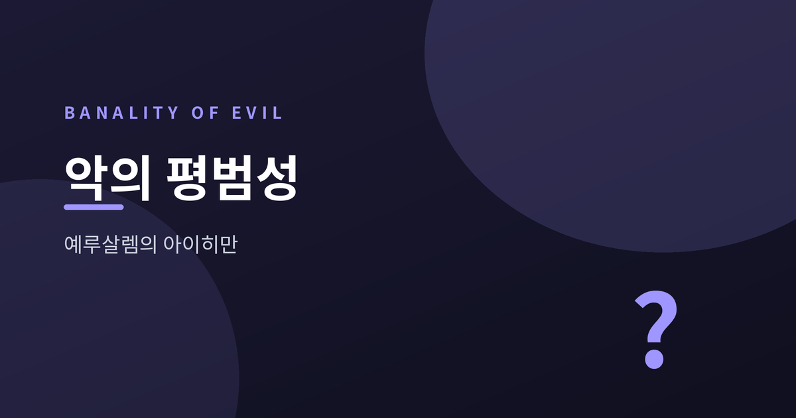
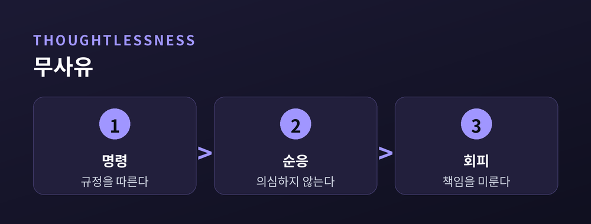

평범한 사람이 어떻게 거대한 악에 가담하는가

거대한 악을 저지른 사람은 괴물일 것이라고 우리는 흔히 상상합니다. 그러나 한나 아렌트는 정반대의 결론에 이르렀습니다. 1961년 예루살렘 법정에 선 한 남자를 지켜보며, 그는 악이 얼마나 평범한 얼굴을 하고 있는지 물었습니다.
1960년 아르헨티나에서 체포된 아돌프 아이히만은 이스라엘로 압송되었습니다. 재판은 1961년 4월 11일 예루살렘에서 시작되었고, 전 세계에 생중계되었습니다. 아이히만은 나치 친위대 장교로서 유대인의 강제 이송을 조직한 실무 책임자였습니다. 잡지 《더 뉴요커》는 정치철학자 한나 아렌트를 특파원으로 파견했습니다. 법정에서 아렌트가 마주한 인물은 피에 굶주린 괴물이 아니라, 명령과 규정을 성실히 따랐다고 항변하는 평범한 관리에 가까웠습니다.
아렌트는 1963년 취재 기록을 책으로 묶으며 '악의 평범성(banality of evil)'이라는 표현을 남겼습니다. 이 개념의 핵심은 거대한 악이 반드시 거대한 악의(惡意)에서 나오지는 않는다는 데 있습니다. 아이히만을 움직인 것은 광신적 증오라기보다 승진과 인정에 대한 욕구, 그리고 상투어 뒤에 숨는 습관이었다고 아렌트는 보았습니다. 그는 이렇게 적었습니다.
"문제는 그토록 많은 사람이 아이히만과 같았다는 것, 그리고 그 다수가 도착적이지도 가학적이지도 않은, 소름 끼치도록 정상적인 사람들이었다는 데 있다."

아렌트가 주목한 것은 아이히만의 '무사유(thoughtlessness)'였습니다. 자신이 하는 일이 타인에게 무엇을 의미하는지 멈춰 생각하지 않는 태도 말입니다. 그에게 악은 뿔 달린 본성이 아니라, 판단하기를 그친 자리에서 자라났습니다. 여기서 하나의 물음이 이어집니다. 명령에 따랐을 뿐이라는 변명이 과연 책임을 지워 줄 수 있을까요. 아렌트의 대답은 단호했습니다. 스스로 사유하고 옳고 그름을 가리는 일은 누구에게도 양도할 수 없는 개인의 몫이라는 것입니다.
이 책은 출간되자마자 격렬한 비판에 휩싸였습니다. 특히 유대인 평의회(유덴라트)의 협력을 언급한 대목은 큰 반발을 불렀는데요. 극한의 공포 속에서 시간을 벌려 했던 이들을 지나치게 냉정하게 평가했다는 지적이었습니다. 후일 역사가 베티나 슈탕네트는 《예루살렘 이전의 아이히만》(2014)에서, 녹음 자료를 근거로 아이히만이 실은 확신에 찬 나치 이념가였으며 아렌트가 그의 연기에 속았을 수 있다고 주장했습니다. 반면 옹호자들은 '악의 평범성'이 특정 인물의 무죄를 뜻한 적이 없으며, 평범한 사람도 악에 가담할 수 있다는 경고로 읽어야 한다고 반박합니다.
아렌트의 진단이 완벽했는지는 지금도 논쟁 중입니다. 다만 그가 던진 질문만은 시대를 넘어 남아 있습니다. 우리는 지금, 멈춰 서서 생각하고 있습니까.
참고 소스